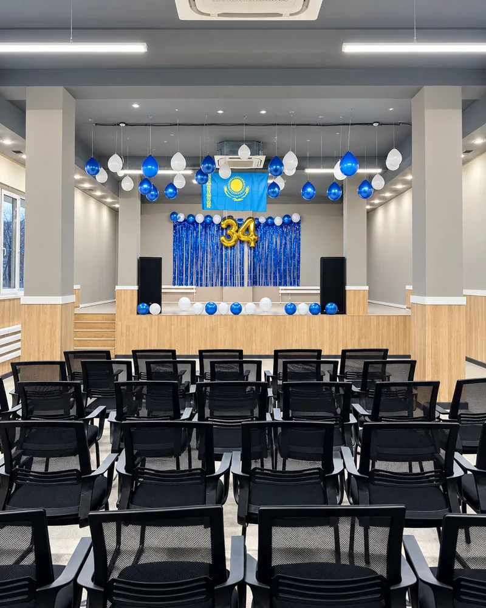

МЕКТЕП ӨМІРІ. ШЫНАЙЫ СӘТТЕР.
Жобалар, қоғамдастық, бірлік және өзін көрсету мүмкіндігі.
БІР КҮН. БІРНЕШЕ РӨЛ.
Оқушы бір күн ішінде тыңдаушы да, автор да, команда мүшесі де, бастама көтеруші де бола алады.
 01JOO AUEZOV / STUDENT-LIFE
01JOO AUEZOV / STUDENT-LIFEӨМІР ТЕК КЕСТЕДЕН ТҰРМАЙДЫ.
Бастама, еріктілік, мектеп қауымдастығына үлес.

02JOO AUEZOV / STUDENT-LIFEJOO AUEZ UMIT
JOO AUEZ UMIT — оқушыға қоғамға пайдалы іске қатысып, жауапкершілікті тек сөзбен емес, әрекетпен сезінуге арналған еріктілік бағыты.
 03JOO AUEZOV / STUDENT-LIFE
03JOO AUEZOV / STUDENT-LIFEОҚУШЫ — ТЕК ҚАТЫСУШЫ ЕМЕС. ОЛ ОРТАНЫ ҚҰРАДЫ.
Идея, жоба немесе мектеп өмірін жақсартатын ұсыныс айту.
 04JOO AUEZOV / STUDENT-LIFE
04JOO AUEZOV / STUDENT-LIFEИДЕЯНЫ НӘТИЖЕГЕ АЙНАЛДЫРУ.
Student Life пен Academics бұл жерде түйіседі: оқушы мәселені зерттейді, шешім құрады, командамен жұмыс істейді және нәтижесін көрсетеді.
 05JOO AUEZOV / STUDENT-LIFE
05JOO AUEZOV / STUDENT-LIFEСАХНА — ТЕК КӨРСЕТУ ҮШІН ЕМЕС. ӨСУ ҮШІН.
Іс-шара оқушыға идеяны жеткізуге, аудитория алдында тұруға, рөл алуға және командамен жұмыс істеуге мүмкіндік береді.
 06JOO AUEZOV / STUDENT-LIFE
06JOO AUEZOV / STUDENT-LIFEКЕҢІСТІК ТЕ ТӘРБИЕЛЕЙДІ.
Оқу, іздену, тапсырмаға жеке көңіл бөлу және тыныш жұмыс үшін.
 07JOO AUEZOV / STUDENT-LIFE
07JOO AUEZOV / STUDENT-LIFEНӘТИЖЕ — ТЕК БАЛЛ ЕМЕС. ҚАЛЫПТАСҚАН ДАҒДЫ ДА НӘТИЖЕ.
Пәндік тереңдік, тест нәтижесі, академиялық ілгерілеу.
 08JOO AUEZOV / STUDENT-LIFE
08JOO AUEZOV / STUDENT-LIFEБІР МЕКТЕП. КӨП МҮМКІНДІК.